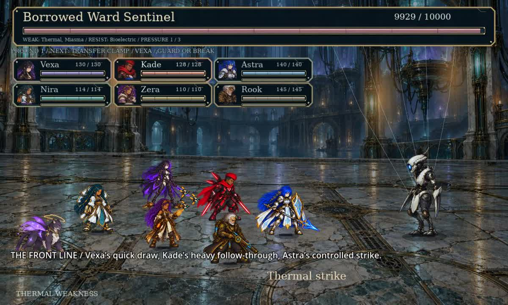

02 / THE WORLD
Beyond the waterfront
Leave Vanta Quay behind and explore painted districts, ruins, and dungeons with your crew and Mote.
A CYBERPUNK JRPG · IN DEVELOPMENT
The machines have turned against us. Follow the signal, find your crew, and discover who set it loose.
▶ Watch the trailer01 / GAMEPLAY TRAILER
“Someone infected the machines.” The party explores the neon waterfront. “Now they’re turning on us.” Mote, the party’s companion, appears in a walk animation preview. “Follow the signal.” Six heroes face off against hostile machines. “Fight as one.” The trailer ends with the Hollow Meridian title, credited to Chaotic Zen Games. Instrumental music plays throughout.
02 / THE WORLD
Leave Vanta Quay behind and explore painted districts, ruins, and dungeons with your crew and Mote.

03 / THE BATTLE SYSTEM
Build your lineup, swap in reserves, and use character skills and team attacks to take on hostile machines.